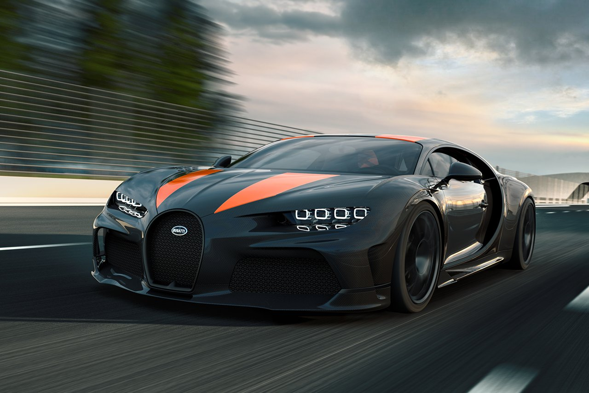

Bugatti estrena una nueva variante del Chiron que se basa en la unidad concebida ex profeso para alcanzar el récord de velocidad: una gesta que consiguió el hiperdeportivo galo a principios de agosto con una marca de 490,484 km/h. ¿Su nombre? Bugatti Chiron Super Sport 300+.Este Bugatti Chiron Super Sport 300+ será también de producción limitada: sólo 30 unidades verán la luz y cada una costará la friolera de 3,5 millones de euros, superando los 2,65 millones de euros del Bugatti Chiron Sport, que se presentaba el año pasado en Ginebra. Las entregas están fijadas para mediados de 2021.
| Top | Supereportivo | Precio | Marca | Velocidad |
| 1 | Bugatti Chiron Super Sport 300+ | 3.5 mill € | 489,241 Km/h | |
| 2 | Hennessey Venom F5 | 1.4 mill € | 484,413 Km/h | |
| 3 | SSC Tuatara | 1.4 mill € | 482,803 Km/h | |
| 4 | Koenigsegg Agera RS | 1.38 mill € | 447,398 Km/h | |
| 5 | Hennessey Venom GT | 1.35 mill € | 434,523 Km/h | |
| Top | Supereportivo | Precio | Marca | Velocidad |